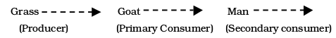

Chapter 14
Ecosystem
Ecosystem

14.1 Ecosystem–Structure and Function
14.2. Productivity
14.3 Decomposition
14.4 Energy Flow
14.5 Ecological Pyramids
14.6 Ecological Succession
14.7 Nutrient Cycling
14.8 Ecosystem Services
An ecosystem can be visualised as a functional unit of nature, where living organisms interact among themselves and also with the surrounding physical environment. Ecosystem varies greatly in size from a small pond to a large forest or a sea. Many ecologists regard the entire biosphere as a global ecosystem, as a composite of all local ecosystems on Earth. Since this system is too much big and complex to be studied at one time, it is convenient to divide it into two basic categories, namely the terrestrial and the aquatic. Forest, grassland and desert are some examples of terrestrial ecosystems; pond, lake, wetland, river and estuary are some examples of aquatic ecosystems. Crop fields and an aquarium may also be considered as man-made ecosystems.
We will first look at the structure of the ecosystem, in order to appreciate the input (productivity), transfer of energy (food chain/web, nutrient cycling) and the output (degradation and energy loss). We will also look at the relationships – cycles, chains, webs – that are created as a result of these energy flows within the system and their inter- relationship.
14.1 Ecosystem – Structure and Function
In chapter 13, you have looked at the various components of the environment- abiotic and biotic. You studied how the individual biotic and abiotic factors affected each other and their surrounding. Let us look at these components in a more integrated manner and see how the flow of energy takes place within these components of the ecosystem.
Interaction of biotic and abiotic components result in a physical structure that is characteristic for each type of ecosystem. Identification and enumeration of plant and animal species of an ecosystem gives its species composition. Vertical distribution of different species occupying different levels is called stratification. For example, trees occupy top vertical strata or layer of a forest, shrubs the second and herbs and grasses occupy the bottom layers.
The components of the ecosystem are seen to function as a unit when you consider the following aspects:
(i) Productivity;
(ii) Decomposition;
(iii) Energy flow; and
(iv) Nutrient cycling.
To understand the ethos of an aquatic ecosystem let us take a small pond as an example. This is fairly a self-sustainable unit and rather simple example that explain even the complex interactions that exist in an aquatic ecosystem. A pond is a shallow water body in which all the above mentioned four basic components of an ecosystem are well exhibited. The abiotic component is the water with all the dissolved inorganic and organic substances and the rich soil deposit at the bottom of the pond. The solar input, the cycle of temperature, day-length and other climatic conditions regulate the rate of function of the entire pond. The autotrophic components include the phytoplankton, some algae and the floating, submerged and marginal plants found at the edges. The consumers are represented by the zooplankton, the free swimming and bottom dwelling forms. The decomposers are the fungi, bacteria and flagellates especially abundant in the bottom of the pond. This system performs all the functions of any ecosystem and of the biosphere as a whole, i.e., conversion of inorganic into organic material with the help of the radiant energy of the sun by the autotrophs; consumption of the autotrophs by heterotrophs; decomposition and mineralisation of the dead matter to release them back for reuse by the autotrophs, these event are repeated over and over again. There is unidirectional movement of energy towards the higher trophic levels and its dissipation and loss as heat to the environment.
14.2. Productivity
A constant input of solar energy is the basic requirement for any ecosystem to function and sustain. Primary production is defined as the amount of biomass or organic matter produced per unit area over a time period by plants during photosynthesis. It is expressed in terms of weight (g–2) or energy (kcal m–2). The rate of biomass production is called productivity. It is expressed in terms of g–2 yr–1 or (kcal m–2) yr–1 to compare the productivity of different ecosystems. It can be divided into gross primary productivity (GPP) and net primary productivity (NPP). Gross primary productivity of an ecosystem is the rate of production of organic matter during photosynthesis. A considerable amount of GPP is utilised by plants in respiration. Gross primary productivity minus respiration losses (R), is the net primary productivity (NPP).
GPP – R = NPP
Net primary productivity is the available biomass for the consumption to heterotrophs (herbiviores and decomposers). Secondary productivity is defined as the rate of formation of new organic matter by
consumers.
Primary productivity depends on the plant species inhabiting a particular area. It also depends on a variety of environmental factors, availability of nutrients and photosynthetic capacity of plants. Therefore, it varies in different types of ecosystems. The annual net primary productivity of the whole biosphere is approximately 170 billion tons (dry weight) of organic matter. Of this, despite occupying about 70 per cent of the surface, the productivity of the oceans are only 55 billion tons. Rest of course, is on land. Discuss the main reason for the low productivity of ocean with your teacher.
14.3 Decomposition
You may have heard of the earthworm being referred to as the farmer’s ‘friend’. This is so because they help in the breakdown of complex organic matter as well as in loosening of the soil. Similarly, decomposers break down complex organic matter into inorganic substances like carbon dioxide, water and nutrients and the process is called decomposition. Dead plant remains such as leaves, bark, flowers and dead remains of animals, including fecal matter, constitute detritus, which is the raw material for decomposition. The important steps in the process of decomposition are fragmentation, leaching, catabolism, humification and mineralisation.
Detritivores (e.g., earthworm) break down detritus into smaller particles. This process is called fragmentation. By the process of leaching, water-soluble inorganic nutrients go down into the soil horizon and get precipitated as unavailable salts. Bacterial and fungal enzymes degrade detritus into simpler inorganic substances. This process is called as catabolism.
It is important to note that all the above steps in decomposition operate simultaneously on the detritus (Figure 14.1). Humification and mineralisation occur during decomposition in the soil. Humification leads to accumulation of a dark coloured amorphous substance called humus that is highly resistant to microbial action and undergoes decomposition at an extremely slow rate. Being colloidal in nature it serves as a reservoir of nutrients. The humus is further degraded by some microbes and release of inorganic nutrients occur by the process known as mineralisation.

Decomposition is largely an oxygen-requiring process. The rate of decomposition is controlled by chemical composition of detritus and climatic factors. In a particular climatic condition, decomposition rate is slower if detritus is rich in lignin and chitin, and quicker, if detritus is rich in nitrogen and water-soluble substances like sugars. Temperature and soil moisture are the most important climatic factors that regulate decomposition through their effects on the activities of soil microbes. Warm and moist environment favour decomposition whereas low temperature and anaerobiosis inhibit decomposition resulting in build up of organic materials.
14.4 Energy Flow
Except for the deep sea hydro-thermal ecosystem, sun is the only source of energy for all ecosystems on Earth. Of the incident solar radiation less than 50 per cent of it is photosynthetically active radiation (PAR). We know that plants and photosynthetic bacteria (autotrophs), fix suns’ radiant energy to make food from simple inorganic materials. Plants capture only 2-10 per cent of the PAR and this small amount of energy sustains the entire living world. So, it is very important to know how the solar energy captured by plants flows through different organisms of an ecosystem. All organisms are dependent for their food on producers, either directly or indirectly. So you find unidirectional flow of energy from the sun to producers and then to consumers. Is this in keeping with the first law of thermodynamics?
Further, ecosystems are not exempt from the Second Law of thermodynamics. They need a constant supply of energy to synthesise the molecules they require, to counteract the universal tendency toward increasing disorderliness.
The green plant in the ecosystem-terminology are called producers. In a terrestrial ecosystem, major producers are herbaceous and woody plants. Likewise, primary producers in an aquatic ecosystem are various species like phytoplankton, algae and higher plants.
You have read about the food chains and webs that exist in nature. Starting from the plants (or producers) food chains or rather webs are formed such that an animal feeds on a plant or on another animal and in turn is food for another. The chain or web is formed because of this interdependency. No energy that is trapped into an organism remains in it for ever. The energy trapped by the producer, hence, is either passed on to a consumer or the organism dies. Death of organism is the beginning of the detritus food chain/web.
All animals depend on plants (directly or indirectly) for their food needs. They are hence called consumers and also heterotrophs. If they feed on the producers, the plants, they are called primary consumers, and if the animals eat other animals which in turn eat the plants (or their produce) they are called secondary consumers. Likewise, you could have tertiary consumers too. Obviously the primary consumers will be herbivores. Some common herbivores are insects, birds and mammals in terrestrial ecosystem and molluscs in aquatic ecosystem.

The consumers that feed on these herbivores are carnivores, or more correctly primary carnivores (though secondary consumers). Those animals that depend on the primary carnivores for food are labelled secondary carnivores. A simple grazing food chain (GFC) is depicted below:
The detritus food chain (DFC) begins with dead organic matter. It is made up of decomposers which are heterotrophic organisms, mainly fungi and bacteria. They meet their energy and nutrient requirements by degrading dead organic matter or detritus. These are also known as saprotrophs (sapro: to decompose). Decomposers secrete digestive enzymes that breakdown dead and waste materials into simple, inorganic materials, which are subsequently absorbed by them.
In an aquatic ecosystem, GFC is the major conduit for energy flow. As against this, in a terrestrial ecosystem, a much larger fraction of energy flows through the detritus food chain than through the GFC. Detritus food chain may be connected with the grazing food chain at some levels: some of the organisms of DFC are prey to the GFC animals, and in a natural ecosystem, some animals like cockroaches, crows, etc., are omnivores. These natural interconnection of food chains make it a food web. How would you classify human beings!
Figure 14.2 Diagrammatic representation of trophic levels in an ecosystem
Organisms occupy a place in the natural surroundings or in a community according to their feeding relationship with other organisms. Based on the source of their nutrition or food, organisms occupy a specific place in the food chain that is known as their trophic level. Producers belong to the first trophic level, herbivores (primary consumer) to the second and carnivores (secondary consumer) to the third (Figure 14.2).
The important point to note is that the amount of energy decreases at successive trophic levels. When any organism dies it is converted to detritus or dead biomass that serves as an energy source for decomposers. Organisms at each trophic level depend on those at the lower trophic level for their energy demands.

Figure 14.3 Energy flow through different trophic levels
Each trophic level has a certain mass of living material at a particular time called as the standing crop. The standing crop is measured as the mass of living organisms (biomass) or the number in a unit area. The biomass of a species is expressed in terms of fresh or dry weight. Measurement of biomass in terms of dry weight is more accurate. Why?
The number of trophic levels in the grazing food chain is restricted as the transfer of energy follows 10 per cent law – only 10 per cent of the energy is transferred to each trophic level from the lower trophic level. In nature, it is possible to have so many levels – producer, herbivore, primary carnivore, secondary carnivore in the grazing food chain (Figure 14.3) . Do you think there is any such limitation in a detritus food chain?
14.5 Ecological Pyramids
You must be familiar with the shape of a pyramid. The base of a pyramid is broad and it narrows down at the apex. One gets a similar shape, whether you express the food or energy relationship between organisms at different trophic level. Thus, relationship is expressed in terms of number, biomass or energy. The base of each pyramid represents the producers or the first trophic level while the apex represents tertiary or top level consumer. The three ecological pyramids that are usually studied are (a) pyramid of number; (b) pyramid of biomass and (c) pyramid of energy. For detail (see Figure 14.4 a, b, c and d).
Figure 14.4 (d) An ideal pyramid of energy. Observe that primary producers convert only 1% of the energy in the sunlight available to them into NPP
Any calculations of energy content, biomass, or numbers has to include all organisms at that trophic level. No generalisations we make will be true if we take only a few individuals at any trophic level into account. Also a given organism may occupy more than one trophic level simultaneously. One must remember that the trophic level represents a functional level, not a species as such. A given species may occupy more than one trophic level in the same ecosystem at the same time; for example, a sparrow is a primary consumer when it eats seeds, fruits, peas, and a secondary consumer when it eats insects and worms. Can you work out how many trophic levels human beings function at in a food chain?
In most ecosystems, all the pyramids, of number, of energy and biomass are upright, i.e., producers are more in number and biomass than the herbivores, and herbivores are more in number and biomass than the carnivores. Also energy at a lower trophic level is always more than at a higher level.
There are exceptions to this generalisation: If you were to count the number of insects feeding on a big tree what kind of pyramid would you get? Now add an estimate of the number of small birds depending on the insects, as also the number of larger birds eating the smaller. Draw the shape you would get.
The pyramid of biomass in sea is also generally inverted because the biomass of fishes far exceeds that of phytoplankton. Isn’t that a paradox? How would you explain this?
Pyramid of energy is always upright, can never be inverted, because when energy flows from a particular trophic level to the next trophic level, some energy is always lost as heat at each step. Each bar in the energy pyramid indicates the amount of energy present at each trophic level in a given time or annually per unit area.
However, there are certain limitations of ecological pyramids such as it does not take into account the same species belonging to two or more trophic levels. It assumes a simple food chain, something that almost never exists in nature; it does not accommodate a food web. Moreover, saprophytes are not given any place in ecological pyramids even though they play a vital role in the ecosystem.
14.6 Ecological Succession
You have learnt in Chapter 13, the characteristics of population and community and also their response to environment and how such responses vary from an individual response. Let us examine another aspect of community response to environment over time.
An important characteristic of all communities is that their composition and structure constantly change in response to the changing environmental conditions. This change is orderly and sequential, parallel with the changes in the physical environment. These changes lead finally to a community that is in near equilibrium with the environment and that is called a climax community. The gradual and fairly predictable change in the species composition of a given area is called ecological succession. During succession some species colonise an area and their populations become more numerous, whereas populations of other species decline and even disappear.
The entire sequence of communities that successively change in a given area are called sere(s). The individual transitional communities are termed seral stages or seral communities. In the successive seral stages there is a change in the diversity of species of organisms, increase in the number of species and organisms as well as an increase in the total biomass.
The present day communities in the world have come to be because of succession that has occurred over millions of years since life started on earth. Actually succession and evolution would have been parallel processes at that time.
Succession is hence a process that starts where no living organisms are there – these could be areas where no living organisms ever existed, say bare rock; or in areas that somehow, lost all the living organisms that existed there. The former is called primary succession, while the latter is termed secondary succession.
Examples of areas where primary succession occurs are newly cooled lava, bare rock, newly created pond or reservoir. The establishment of a new biotic community is generally slow. Before a biotic community of diverse organisms can become established, there must be soil. Depending mostly on the climate, it takes natural processes several hundred to several thousand years to produce fertile soil on bare rock.
Secondary succession begins in areas where natural biotic communities have been destroyed such as in abandoned farm lands, burned or cut forests, lands that have been flooded. Since some soil or sediment is present, succession is faster than primary succession.
Description of ecological succession usually focuses on changes in vegetation. However, these vegetational changes in turn affect food and shelter for various types of animals. Thus, as succession proceeds, the numbers and types of animals and decomposers also change.
At any time during primary or secondary succession, natural or human induced disturbances (fire, deforestation, etc.), can convert a particular seral stage of succession to an earlier stage. Also such disturbances create new conditions that encourage some species and discourage or eliminate other species.
14.6.1 Succession of Plants
Based on the nature of the habitat – whether it is water (or very wet areas) or it is on very dry areas – succession of plants is called hydrarch or xerarch, respectively. Hydrarch succession takes place in wetter areas and the successional series progress from hydric to the mesic conditions. As against this, xerarch succession takes place in dry areas and the series progress from xeric to mesic conditions. Hence, both hydrarch and xerarch successions lead to medium water conditions (mesic) – neither too dry (xeric) nor too wet (hydric).
The species that invade a bare area are called pioneer species. In primary succession on rocks these are usually lichens which are able to secrete acids to dissolve rock, helping in weathering and soil formation. These later pave way to some very small plants like bryophytes, which are able to take hold in the small amount of soil. They are, with time, succeeded by bigger plants, and after several more stages, ultimately a stable climax forest community is formed. The climax community remains stable as long as the environment remains unchanged. With time the xerophytic habitat gets converted into a mesophytic one.
In primary succession in water, the pioneers are the small phytoplanktons, they are replaced with time by rooted-submerged plants, rooted-floating angiosperms followed by free-floating plants, then reed-swamp, marsh-meadow, scrub and finally the trees. The climax again would be a forest. With time the water body is converted into land (Figure 14.5).
Figure 14.5 Diagrammatic representation of primary succession
In secondary succession the species that invade depend on the condition of the soil, availability of water, the environment as also the seeds or other propagules present. Since soil is already there, the rate of succession is much faster and hence, climax is also reached more quickly.
What is important to understand is that succession, particularly primary succession, is a very slow process, taking maybe thousands of years for the climax to be reached. Another important fact is to understand that all succession whether taking place in water or on land, proceeds to a similar climax community – the mesic.
14.7 Nutrient Cycling
Figure 14.6 Simplified model of carbon cycle in the biosphere
You have studied in Class XI that organisms need a constant supply of nutrients to grow, reproduce and regulate various body functions. The amount of nutrients, such as carbon, nitrogen, phosphorus, calcium, etc., present in the soil at any given time, is referred to as the standing state. It varies in different kinds of ecosystems and also on a seasonal basis.
What is important is to appreciate that nutrients which are never lost from the ecosystems, are recycled time and again indefinitely. The movement of nutrient elements through the various components of an ecosystem is called nutrient cycling. Another name of nutrient cycling is biogeochemical cycles (bio: living organism, geo: rocks, air, water). Nutrient cycles are of two types: (a) gaseous and (b) sedimentary. The reservoir for gaseous type of nutrient cycle (e.g., nitrogen, carbon cycle) exists in the atmosphere and for the sedimentary cycle (e.g., sulphur and phosphorus cycle), the reservoir is located in Earth’s crust. Environmental factors, e.g., soil, moisture, pH, temperature, etc., regulate the rate of release of nutrients into the atmosphere. The function of the reservoir is to meet with the deficit which occurs due to imbalance in the rate of influx and efflux.
You have made a detailed study of nitrogen cycle in class XI. Here we discuss carbon and phosphorus cycles.
14.7.1 Ecosystem – Carbon Cycle
When you study the composition of living organisms, carbon constitutes 49 per cent of dry weight of organisms and is next only to water. If we look at the total quantity of global carbon, we find that 71 per cent carbon is found dissolved in oceans. This oceanic reservoir regulates the amount of carbon dioxide in the atmosphere (Figure 14.6). Do you know that the atmosphere only contains about 1per cent of total global carbon?
Fossil fuel also represent a reservoir of carbon. Carbon cycling occurs through atmosphere, ocean and through living and dead organisms. According to one estimate 4 × 1013 kg of carbon is fixed in the biosphere through photosynthesis annually. A considerable amount of carbon returns to the atmosphere as CO2 through respiratory activities of the producers and consumers. Decomposers also contribute substantially to CO2 pool by their processing of waste materials and dead organic matter of land or oceans. Some amount of the fixed carbon is lost to sediments and removed from circulation. Burning of wood, forest fire and combustion of organic matter, fossil fuel, volcanic activity are additional sources for releasing CO2 in the atmosphere.
Human activities have significantly influenced the carbon cycle. Rapid deforestation and massive burning of fossil fuel for energy and transport have significantly increased the rate of release of carbon dioxide into the atmosphere (see greenhouse effect in Chapter 16).
14.7.2 Ecosystem – Phosphorus Cycle
Phosphorus is a major constituent of biological membranes, nucleic acids and cellular energy transfer systems. Many animals also need large quantities of this element to make shells, bones and teeth. The natural reservoir of phosphorus is rock, which contains phosphorus in the form of phosphates. When rocks are weathered, minute amounts of these phosphates dissolve in soil solution and are absorbed by the roots of the plants (Figure 14.7). Herbivores and other animals obtain this element from plants. The waste products and the dead organisms are decomposed by phosphate-solubilising bacteria releasing phosphorus. Unlike carbon cycle, there is no respiratory release of phosphorus into atmosphere. Can you differentiate between the carbon and the phosphorus cycle?
The other two major and important differences between carbon and phosphorus cycle are firstly, atmospheric inputs of phosphorus through rainfall are much smaller than carbon inputs, and, secondly, gaseous exchanges of phosphorus between organism and environment are negligible.
14.8 Ecosystem Services
Healthy ecosystems are the base for a wide range of economic, environmental and aesthetic goods and services. The products of ecosystem processes are named as ecosystem services, for example, healthy forest ecosystems purify air and water, mitigate droughts and floods, cycle nutrients, generate fertile soils, provide wildlife habitat, maintain biodiversity, pollinate crops, provide storage site for carbon and also provide aesthetic, cultural and spiritual values. Though value of such services of biodiversity is difficult to determine, it seems reasonable to think that biodiversity should carry a hefty price tag.
Robert Constanza and his colleagues have very recently tried to put price tags on nature’s life-support services. Researchers have put an average price tag of US $ 33 trillion a year on these fundamental ecosystems services, which are largely taken for granted because they are free. This is nearly twice the value of the global gross national product GNP which is (US $ 18 trillion).
Out of the total cost of various ecosystem services, the soil formation accounts for about 50 per cent, and contributions of other services like recreation and nutrient cycling, are less than 10 per cent each. The cost of climate regulation and habitat for wildlife are about 6 per cent each.
An ecosystem is a functional unit of nature and comprises abiotic and biotic components. Abiotic components are inorganic materials- air, water and soil, whereas biotic components are producers, consumers and decomposers. Each ecosystem has characteristic physical structure resulting from interaction amongst abiotic and biotic components. Species composition and stratification are the two main structural features of an ecosystem. Based on source of nutrition every organism occupies a place in an ecosystem.
Productivity, decomposition, energy flow, and nutrient cycling are the four important components of an ecosystem. Primary productivity is the rate of capture of solar energy or biomass production of the producers. It is divided into two types: gross primary productivity (GPP) and net primary productivity (NPP). Rate of capture of solar energy or total production of organic matter is called as GPP. NPP is the remaining biomass or the energy left after utilisation of producers. Secondary productivity is the rate of assimilation of food energy by the consumers. In decomposition, complex organic compounds of detritus are converted to carbon dioxide, water and inorganic nutrients by the decomposers. Decomposition involves three processes, namely fragmentation of detritus, leaching and catabolism.
Energy flow is unidirectional. First, plants capture solar energy and then, food is transferred from the producers to decomposers. Organisms of different trophic levels in nature are connected to each other for food or energy relationship forming a food chain. The storage and movement of nutrient elements through the various components of the ecosystem is called nutrient cycling; nutrients are repeatedly used through this process. Nutrient cycling is of two types—gaseous and sedimentary. Atmosphere or hydrosphere is the reservoir for the gaseous type of cycle (carbon), whereas Earth’s crust is the reservoir for sedimentary type (phosphorus). Products of ecosystem processes are named as ecosystem services, e.g., purification of air and water by forests.
The biotic community is dynamic and undergoes changes with the passage of time. These changes are sequentially ordered and constitute ecological succession. Succession begins with invasion of a bare lifeless area by pioneers which later pave way for successors and ultimately a stable climax community is formed. The climax community remains stable as long as the environment remains unchanged.
EXERCISES
1. Fill in the blanks.
(a) Plants are called as_________because they fix carbon dioxide.
(b) In an ecosystem dominated by trees, the pyramid (of numbers) is_________type.
(c) In aquatic ecosystems, the limiting factor for the productivity is_________.
(d) Common detritivores in our ecosystem are_________.
(e) The major reservoir of carbon on earth is_________.
2. Which one of the following has the largest population in a food chain?
(a) Producers
(b) Primary consumers
(c) Secondary consumers
(d) Decomposers
3. The second trophic level in a lake is
(a) Phytoplankton
(b) Zooplankton
(c) Benthos
(d) Fishes
4. Secondary producers are
(a) Herbivores
(b) Producers
(c) Carnivores
(d) None of the above
5. What is the percentage of photosynthetically active radiation (PAR) in the incident solar radiation?
(a) 100%
(b) 50 %
(c) 1-5%
(d) 2-10%
6. Distinguish between
(a) Grazing food chain and detritus food chain
(b) Production and decomposition
(c) Upright and inverted pyramid
(d) Food chain and Food web
(e) Litter and detritus
(f) Primary and secondary productivity
7. Describe the components of an ecosystem.
8. Define ecological pyramids and describe with examples, pyramids of number and biomass.
9. What is primary productivity? Give brief description of factors that affect primary productivity.
10. Define decomposition and describe the processes and products of decomposition.
11. Give an account of energy flow in an ecosystem.
12. Write important features of a sedimentary cycle in an ecosystem.
13. Outline salient features of carbon cycling in an ecosystem.